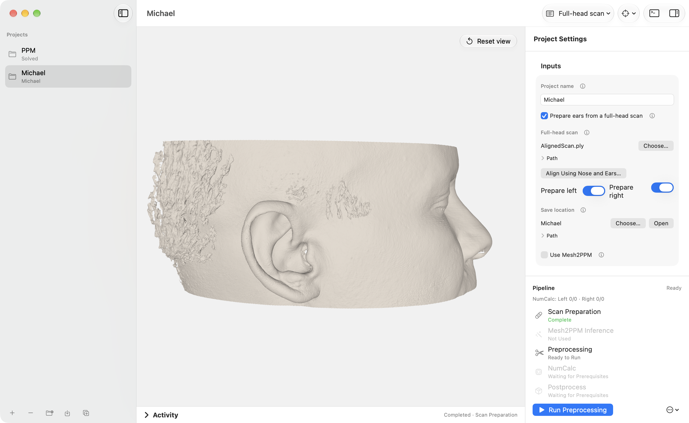
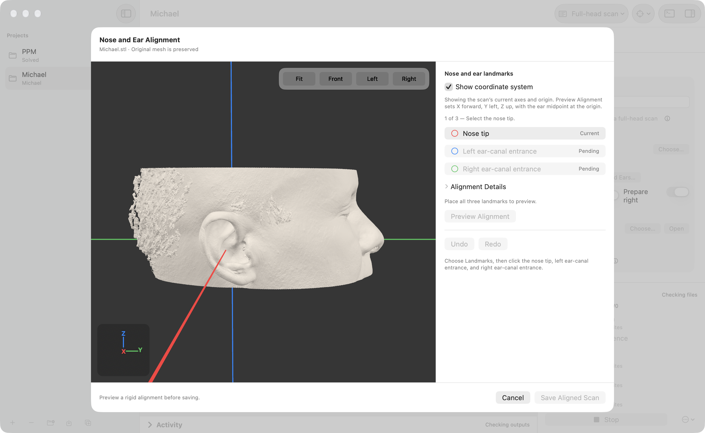
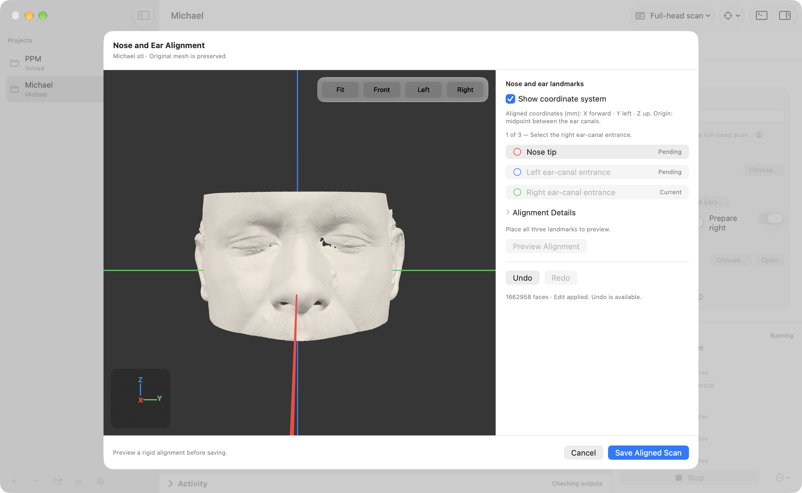
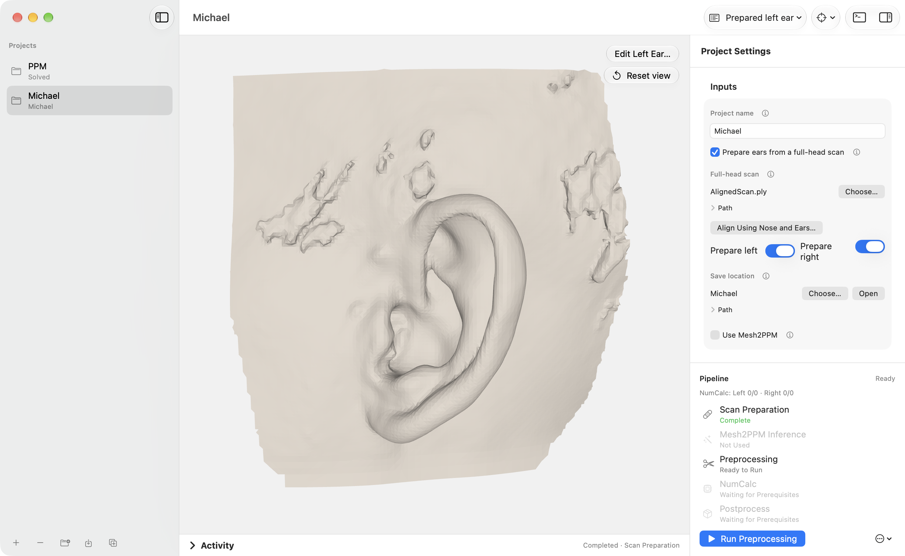
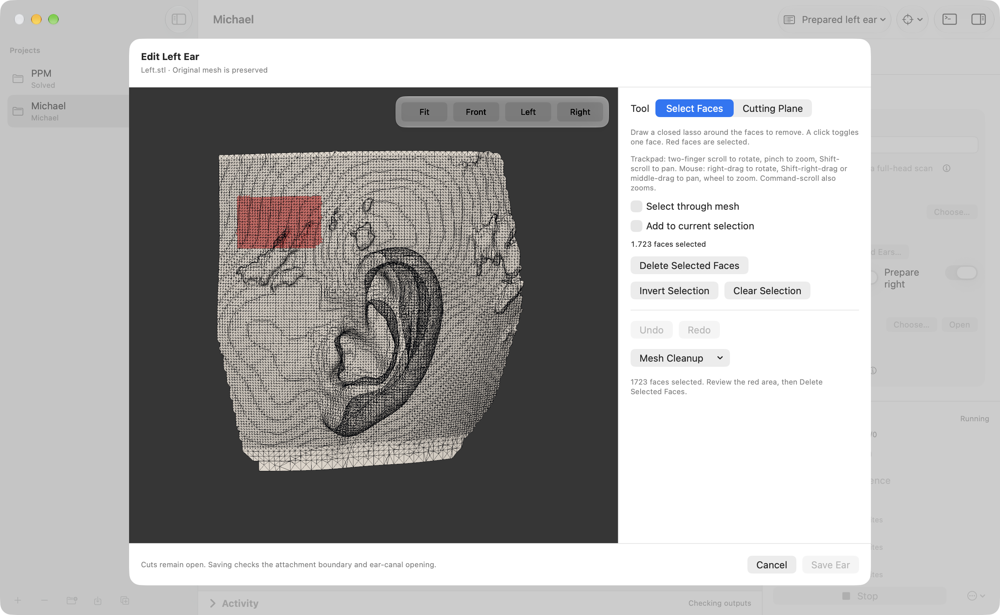
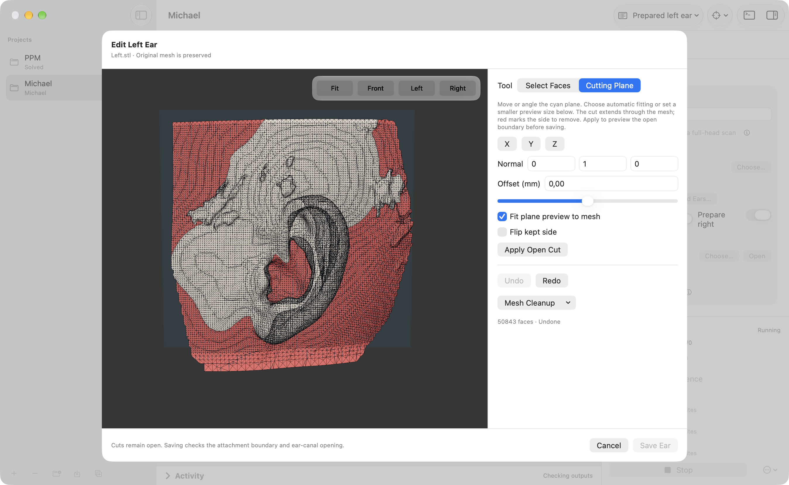

SOURCE GUIDE / Features may differ from the published installer. Check your release before following a workflow.
FULL-HEAD SCANS
Prepare ears from an edited head scan.
The scan workflow aligns an edited full-head mesh, extracts the selected pinnae, and gives you a chance to inspect and refine each result before simulation.
Input expectation
Use an edited full-head scan in millimeters with the pinna surfaces represented. The app does not automatically identify anatomical landmarks, infer scan orientation, or replace a scan-editing tool.


1. Align the scan
Before preparing ears, use Align Using Nose and Ears… to select these points in order: nose tip, left ear-canal entrance, right ear-canal entrance. “Left” and “right” refer to the person in the scan. Preview the rigid transform and save the aligned copy.
The selected landmarks become horizontal. The aligned frame uses X toward the nose, Y toward the person’s left, and Z superior, with the ear midpoint at the origin. This reference is not the Frankfort plane. If your scan is already aligned outside the app, you can skip this step.




2. Prepare and inspect the ears
- Choose the scan and set its crop rotation. Nose-and-ear alignment in the app sets this to zero. For scans aligned elsewhere, verify orientation; a Z rotation of 90 or 270 degrees may be needed.
- Select left, right, or both ears, then run Scan Preparation.
- Inspect each prepared mesh in Preview. The default crop polygon and margins are calibrated for edited, aligned scans, not automatic anatomical location. Check the crop placement for every scan.
How preparation processes and validates the mesh
Preparation crops the pinna region, cleans the mesh, performs 0.75 mm isotropic remeshing (six iterations, capped at 150,000 faces), reconstructs it with Screened Poisson (depth 7, one worker), restores the attachment boundary, and closes residual holes. A prepared ear is validated for one connected surface, consistent winding, finite coordinates, positive volume, and exactly one simple open attachment boundary.
The prepared ears are exported in the crop frame: left toward +Y and right toward −Y. Original scans are preserved. The project retains the validated ear STL files and a provenance report in Prepared/; intermediate geometry is temporary.


3. Review and edit
Open Edit Left Ear… or Edit Right Ear… from the prepared mesh preview. The editor offers two tools:
Select faces
Draw a closed lasso or click individual faces. The selection turns red; inspect it from another angle before choosing Delete Selected Faces. By default only visible surfaces are selected. Enable Select through mesh to include hidden faces, or Add to current selection to build a selection in several passes. Use Invert Selection or Clear Selection to revise it.


Preview a cutting plane
Choose Cutting Plane, then an X, Y, or Z preset, or enter an arbitrary normal. Adjust the offset and kept side. The cyan rectangle shows the plane; red marks the part to remove. Automatic preview sizing fits the cross-section, and custom width and height change the preview rectangle.
Position the plane to preserve the pinna and the intended attachment boundary. Choose Apply Open Cut to inspect the result; use Undo if it removes anatomy you need.


Use Mesh Cleanup → Keep Largest Component to remove disconnected fragments from the working copy. Apply a cut to inspect its open boundary, then use Undo or Redo as needed. Save Ear validates and saves the result. The editor requires a connected, manifold surface with consistent winding, one simple attachment boundary, and at most one canal opening. It leaves new cuts open. Later simulation preprocessing closes the canal and estimates its source landmark using the existing pipeline.
Saved edits and their provenance are stored in MeshEdits/; the original scan and automatically prepared meshes remain unchanged. Require ear review before continuing is an optional pause and is off by default. Reset Outputs preserves saved manual edits.
Automate scan preparation
For command-line runs, set the scan path, rotation, and prepared sides in the YAML file. Use null for an unused paths.left_ear or paths.right_ear; prepared scan inputs are routed automatically.
scan_preparation:
enabled: true
scan_path: /path/to/edited-head.stl
rotation_degrees: 0
prepare_left: true
prepare_right: true
target_edge_mm: 0.75
require_manual_review: false
reviewed_left: null
reviewed_right: nulluv run Pinna2HRTF scan-preparation --config pinna2hrtf.yaml
uv run Pinna2HRTF run-config --config pinna2hrtf.yaml --stage allThe app and CLI reuse a valid preparation when its source and settings are unchanged. Changed scans or preparation settings require a new preparation. Saved ear edits are tied to the preparation generation; changing them invalidates downstream inference and simulation receipts. See the CLI guide for installation and the full pipeline configuration.